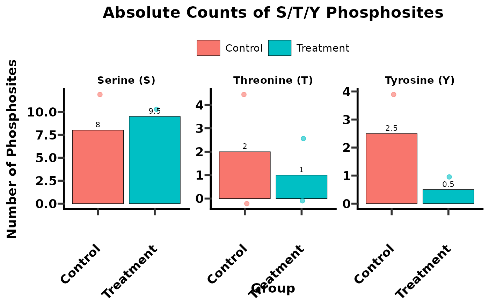
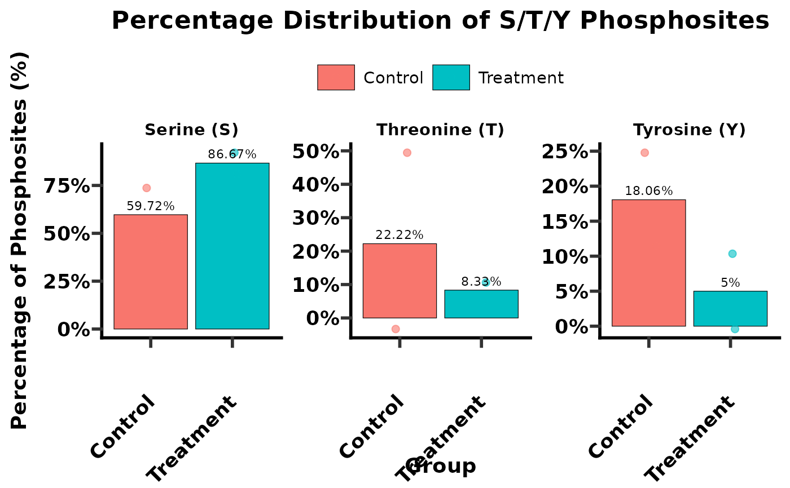

This function calculates the absolute counts and percentages of phosphorylation sites (Serine (S), Threonine (T), Tyrosine (Y)) for each sample, based on a user-defined phosphorylation site probability cutoff. It can then optionally generate bar plots to visualize these counts or percentages across different sample groups.
Usage
get_sty(
data,
plot = c("no", "count", "percentage"),
sample_name,
group,
ptm_site_prob_col,
ptm_site_prob_val = 0.75,
ptm_site_amino_acid,
selected_group = NULL
)Arguments
- data
A data frame containing phosphoproteomics data. This data frame is expected to have columns for sample names, phosphorylation site probabilities, amino acid type of the phosphorylation site, and a grouping variable.
- plot
A character string specifying the type of plot to generate.
"no": No plot is generated; only the summary table is returned.
"count": Generates bar plots showing the absolute counts of S, T, and Y phosphosites for each group, faceted by amino acid type.
"percentage": Generates bar plots showing the percentage distribution of S, T, and Y phosphosites within each group, faceted by amino acid type.
- sample_name
[`data-masking`][rlang::args_data_masking]> The unquoted name of the column in `data` that contains unique sample identifiers. e.g., `SampleID`.
- group
<[`data-masking`][rlang::args_data_masking]> The unquoted name of the column in `data` that defines the experimental groups (e.g., "control", "treat").
- ptm_site_prob_col
<[`data-masking`][rlang::args_data_masking]> The unquoted name of the column in `data` that contains phosphorylation site probabilities (e.g., "Localization_Probabilities").
- ptm_site_prob_val
Numeric, a cutoff value for `ptm_site_prob_col`. Only sites with a probability greater than or equal to this value will be included in the analysis. Default is `0.75`.
- ptm_site_amino_acid
<[`data-masking`][rlang::args_data_masking]> The unquoted name of the column in `data` that contains the amino acid type of the phosphorylation site (expected to be "S", "T", or "Y"). e.g., `Amino_Acid`.
- selected_group
A character vector specifying which groups from the `group` column should be included in the plots. If omitted or `NULL`, all groups will be plotted. This parameter is ignored if `plot = "no"`.
Value
#' If `plot = "no"`, returns a `data.frame` (tibble) summarizing the counts and percentages of S, T, Y phosphosites per sample. If `plot = "count"` or `plot = "percentage"`, returns a `list` containing:
`summary_table`: The `data.frame` of S/T/Y counts and percentages.
`plot`: A `ggplot` object of the generated bar plot.
Examples
# Create data for demonstration
set.seed(123)
phospho_data <- data.frame(
SampleID = rep(c("S1_ctrl", "S2_ctrl", "S3_treat", "S4_treat"), each = 25),
Group = rep(c("Control", "Control", "Treatment", "Treatment"), each = 25),
Protein = paste0("Prot", 1:100),
Localization_Probabilities = runif(100, 0.5, 0.99),
Amino_Acid = sample(c("S", "T", "Y"), 100, replace = TRUE, prob = c(0.7, 0.2, 0.1))
)
# Case 1: Calculate S/T/Y distribution and return data only
sty_counts_df <- get_sty(
data = phospho_data,
plot = "no",
sample_name = SampleID,
group = Group,
ptm_site_prob_col = Localization_Probabilities,
ptm_site_prob_val = 0.75,
ptm_site_amino_acid = Amino_Acid
)
print(sty_counts_df)
#> # A tibble: 4 × 9
#> SampleID Group S Y T STY pct_S pct_T pct_Y
#> <chr> <chr> <dbl> <dbl> <dbl> <dbl> <dbl> <dbl> <dbl>
#> 1 S1_ctrl Control 12 4 0 16 75 0 25
#> 2 S2_ctrl Control 4 1 4 9 44.4 44.4 11.1
#> 3 S3_treat Treatment 10 0 2 12 83.3 16.7 0
#> 4 S4_treat Treatment 9 1 0 10 90 0 10
# Case 2: Calculate S/T/Y distribution and generate count plots
# Define selected groups for plotting
selected_groups_for_plot <- c("Control", "Treatment")
sty_counts_plot <- get_sty(
data = phospho_data,
plot = "count",
sample_name = SampleID,
group = Group,
ptm_site_prob_col = Localization_Probabilities,
ptm_site_prob_val = 0.75,
ptm_site_amino_acid = Amino_Acid,
selected_group = selected_groups_for_plot
)
print(sty_counts_plot$summary_table)
#> # A tibble: 4 × 9
#> SampleID Group S Y T STY pct_S pct_T pct_Y
#> <chr> <chr> <dbl> <dbl> <dbl> <dbl> <dbl> <dbl> <dbl>
#> 1 S1_ctrl Control 12 4 0 16 75 0 25
#> 2 S2_ctrl Control 4 1 4 9 44.4 44.4 11.1
#> 3 S3_treat Treatment 10 0 2 12 83.3 16.7 0
#> 4 S4_treat Treatment 9 1 0 10 90 0 10
sty_counts_plot$plot # Display the count plot

# Case 3: Calculate S/T/Y distribution and generate percentage plots
sty_percentage_plot <- get_sty(
data = phospho_data,
plot = "percentage",
sample_name = SampleID,
group = Group,
ptm_site_prob_col = Localization_Probabilities,
ptm_site_prob_val = 0.75,
ptm_site_amino_acid = Amino_Acid,
selected_group = selected_groups_for_plot
)
print(sty_percentage_plot$summary_table)
#> # A tibble: 4 × 9
#> SampleID Group S Y T STY pct_S pct_T pct_Y
#> <chr> <chr> <dbl> <dbl> <dbl> <dbl> <dbl> <dbl> <dbl>
#> 1 S1_ctrl Control 12 4 0 16 75 0 25
#> 2 S2_ctrl Control 4 1 4 9 44.4 44.4 11.1
#> 3 S3_treat Treatment 10 0 2 12 83.3 16.7 0
#> 4 S4_treat Treatment 9 1 0 10 90 0 10
sty_percentage_plot$plot # Display the percentage plot
